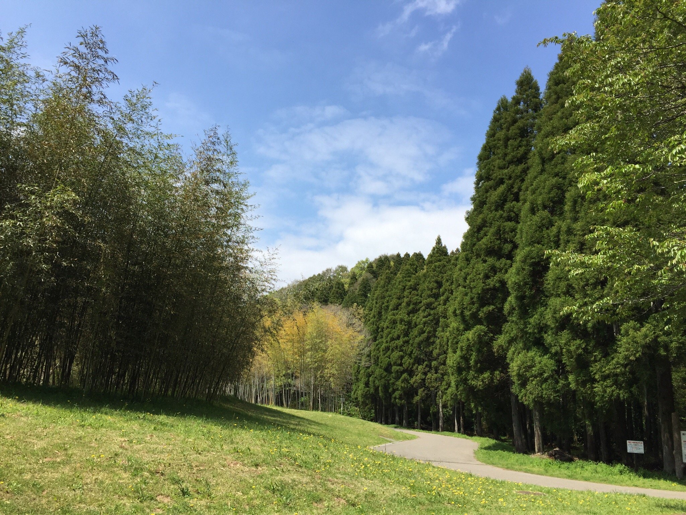

People have lived in Chiba Prefecture for about 40,000 years. Remnants of these prehistoric communities have been discovered at archeological sites throughout the prefecture. Among these sites are a great number of ancient tombs and haniwa clay figures that are representative of Chiba’s ancient culture. During the Edo Period, the Hokuso area supported Edo （Tokyo） daily life and economy using transportation on local highways and the Tone River. This led to the development of towns with distinct characteristics, such as the castle town of Sakura, the temple town of Narita, the merchant town of Sawara, and the port town of Choshi. (Source Chiba)
Prefecture Image
Aeon Mall
Showa no Mori Park
Makuhari Kaihin Park